Click to show/hide code
library(mlbench)
data(PimaIndiansDiabetes)
data(iris)November 1, 2024
A boxplot is used to graphically represent the distribution of numerical and ordinal data.
In addition, it is helpful in identifying outliers.
For example, consider the following two boxplots:
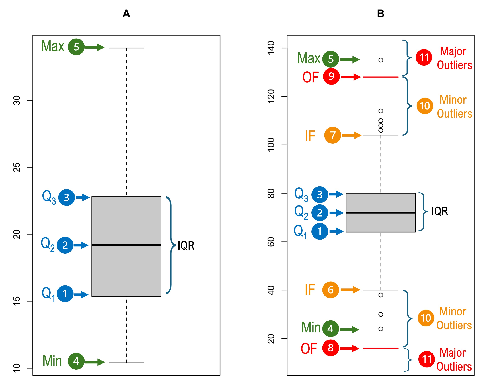
The Box:
It has has three horizontal lines (hinges).
The bottom line represents the \(25^{th}\) percentile (first quartile, \(Q_1\)).
The middle line represents the \(50^{th}\) percentile (median, \(Q_2\)).
The top line represents the \(75^{th}\) percentile (third quartile, \(Q_3\)).
The Whiskers:
The whiskers extend from the box to the minimum and maximum if they are contained within \(Q1 - (1.5 \times \text{IQR})\) and \(Q3 + (1.5 \times \text{IQR})\) as shown in the boxplot \(A\) to the left panel.
On the other hand, the whiskers are capped by short horizontal lines and (inner fences, IF) at \(Q1 - (1.5 \times \text{IQR})\) and \(Q3 + (1.5 \times \text{IQR})\) if there are values outside this range as shown in the boxplot \(B\) to the right panel. These fences are also referred to as Tukey’s fences.
Additionally, the boxplot \(B\) shows short horizontal lines and that are referred to as outer fences (OF) and are located at \(Q1 - (3 \times \text{IQR})\) and \(Q3 + (3 \times \text{IQR})\). However, the outer fences are not shown on the boxplot by default in R.
Outliers:
Grubbs defined outlier as “an observation that deviates markedly from other members of the sample in which it occurs.”
The values located between the inner and outer fences are termed minor outliers (Boxplot \(B\)).
The values located beyond the outer fences are termed major outliers (Boxplot \(B\)).
The function identify_outliers() from the rstatix package can be used to identify outliers based on Tukey’s method
As an example, we will use the pressure variable from the PimaIndiansDiabetes dataset which is available in the mlbench package or Sepal.Width variable from the iris dataset, which is available in base R.
So, the first step is to load the required libraries and datasets:
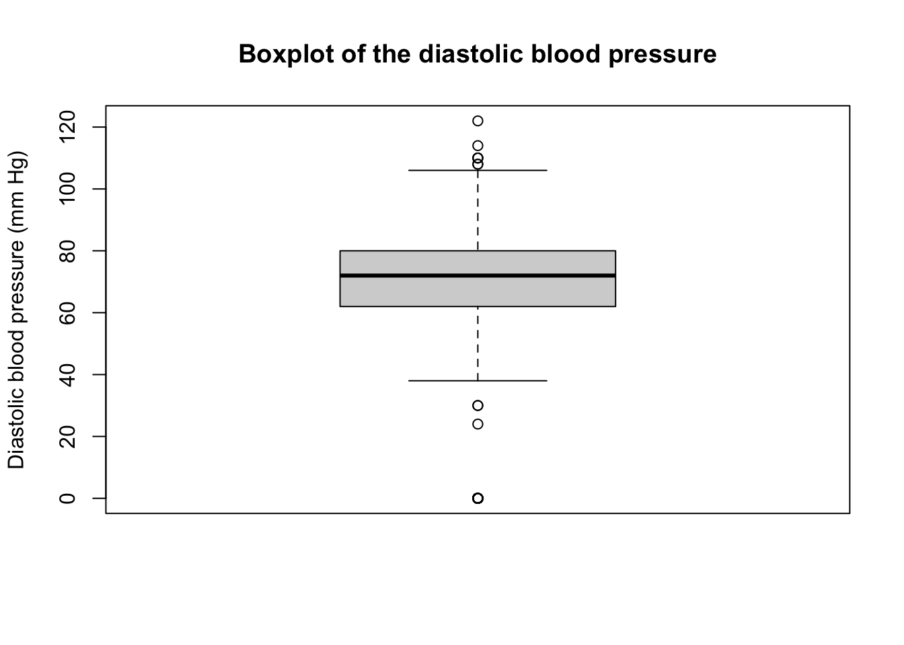
The outlying observation can be identified using the function identify_outliers() from the rstatix package as follows:
Attaching package: 'rstatix'The following object is masked from 'package:stats':
filter pressure is.outlier is.extreme
8 0 TRUE TRUE
16 0 TRUE TRUE
19 30 TRUE FALSE
44 110 TRUE FALSE
50 0 TRUE TRUE
61 0 TRUE TRUE
79 0 TRUE TRUE
82 0 TRUE TRUE
85 108 TRUE FALSE
107 122 TRUE FALSE
126 30 TRUE FALSE
173 0 TRUE TRUE
178 110 TRUE FALSE
194 0 TRUE TRUE
223 0 TRUE TRUE
262 0 TRUE TRUE
267 0 TRUE TRUE
270 0 TRUE TRUE
301 0 TRUE TRUE
333 0 TRUE TRUE
337 0 TRUE TRUE
348 0 TRUE TRUE
358 0 TRUE TRUE
363 108 TRUE FALSE
427 0 TRUE TRUE
431 0 TRUE TRUE
436 0 TRUE TRUE
454 0 TRUE TRUE
469 0 TRUE TRUE
485 0 TRUE TRUE
495 0 TRUE TRUE
523 0 TRUE TRUE
534 0 TRUE TRUE
536 0 TRUE TRUE
550 110 TRUE FALSE
590 0 TRUE TRUE
598 24 TRUE FALSE
602 0 TRUE TRUE
605 0 TRUE TRUE
620 0 TRUE TRUE
644 0 TRUE TRUE
692 114 TRUE FALSE
698 0 TRUE TRUE
704 0 TRUE TRUE
707 0 TRUE TRUEis.outlier) or major (is.extreme) outlier.A plus sign \((+)\) is sometimes drawn on the boxplot to indicate the mean as in the following figure:
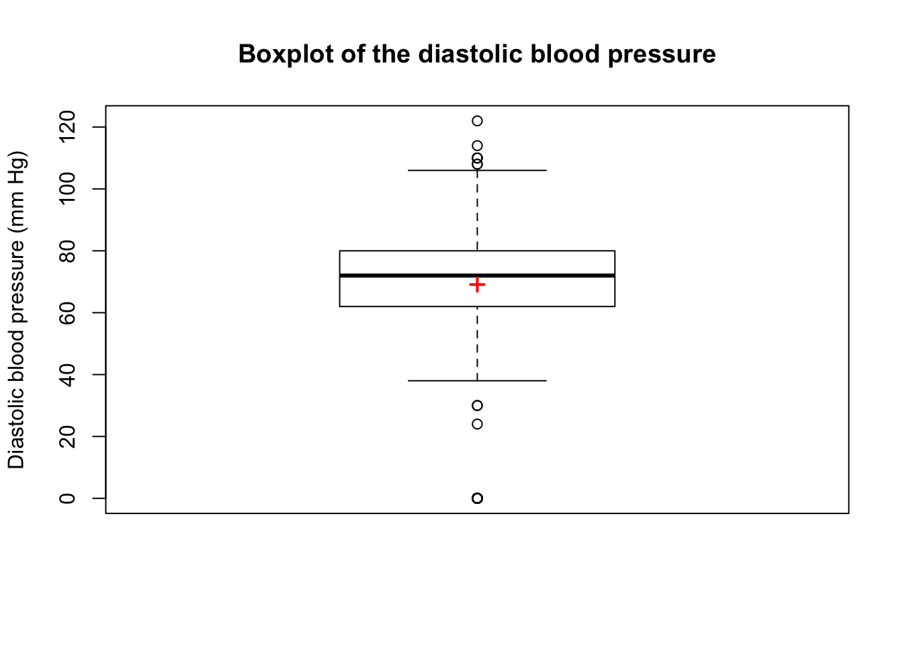
Control fences location
The location of the fences can be controlled using the range argument:
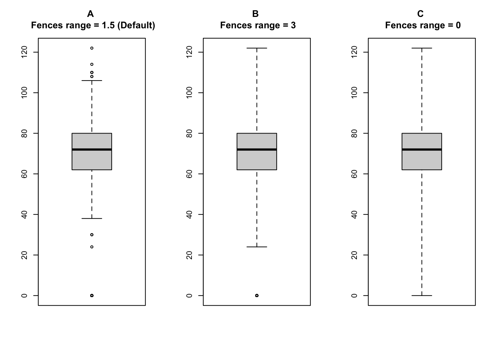
Figure \(A\) shows the boxplot with the fences at \(Q1 - (1.5 \times \text{IQR})\) and \(Q3 + (1.5 \times \text{IQR})\), which is the default setting in R.
Figure \(B\) shows the boxplot with the fences at \(Q1 - (3 \times \text{IQR})\) and \(Q3 + (3 \times \text{IQR})\).
Figure \(C\) shows the boxplot with the fences at the minimum and maximum values.
Notch
The notches in a boxplot represent a rough estimate of the confidence interval around the median.
They extend to the median \(\pm\ 1.58 \times \text{IQR}/ \sqrt{n}\).
Notches can be requested by setting the notch argument to TRUE.
The notches allow for the visual comparison of medians between two groups. If the notches of two boxplots do not overlap, it suggests that there is a statistically significant difference between the medians of the two groups at approximately the 95% confidence level. Conversely, if the notches overlap, the medians are not significantly different.
This is quoted from the help of boxplot.stats() “The notches (if requested) extend to \(\pm 1.58 IQR/sqrt(n)\). This seems to be based on the same calculations as the formula with 1.57 in Chambers et al. (1983, p. 62), given in McGill et al. (1978, p. 16). They are based on asymptotic normality of the median and roughly equal sample sizes for the two medians being compared, and are said to be rather insensitive to the underlying distributions of the samples. The idea appears to be to give roughly a 95% confidence interval for the difference in two medians.”
For example, the following code will draw boxplot with notches for the pressure variable from the PimaIndiansDiabetes dataset grouped by diabetes status:
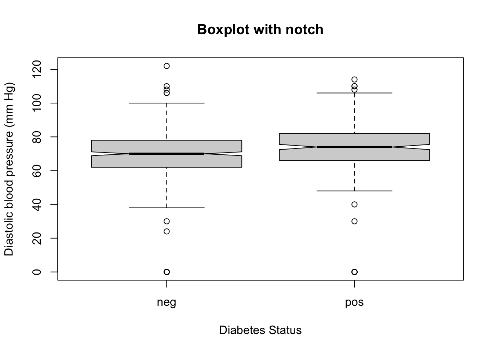
Box width
The argument varwidth can be set to TRUE to draw the boxes with widths proportional to the square root of the number of observations in the groups.
For example, the following code will draw boxplot with variable width for the pressure variable from the PimaIndiansDiabetes dataset grouped by diabetes status:
par(mfrow=c(1,2))
boxplot(
PimaIndiansDiabetes$pressure ~ PimaIndiansDiabetes$diabetes,
varwidth = FALSE,
main = "Equal width",
xlab = "Diabetes Status",
ylab = "Diastolic blood pressure (mm Hg)"
)
boxplot(
PimaIndiansDiabetes$pressure ~ PimaIndiansDiabetes$diabetes,
varwidth = TRUE,
main = "Variable width",
xlab = "Diabetes Status",
ylab = "Diastolic blood pressure (mm Hg)"
)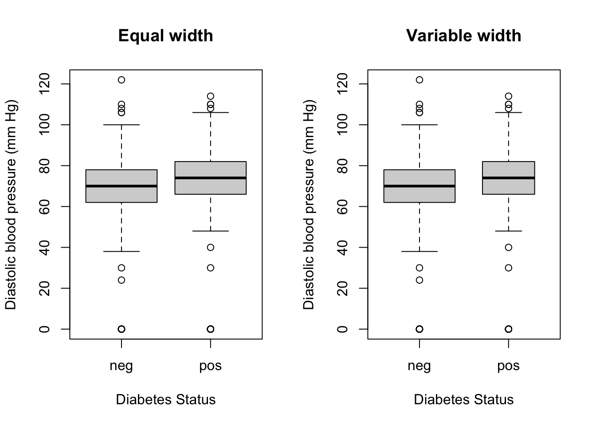
library(ggplot2)
ggplot(
data = PimaIndiansDiabetes,
aes(
x = diabetes,
y = pressure
)
) +
geom_boxplot(
width = 0.5,
color = "#0466c8",
outlier.colour = "#e63946",
staplewidth = 0.2 # width of the horizontal lines relative to the box
) +
stat_summary(
fun = mean,
geom = "point",
shape = 3,
color = "red",
size = 3
) +
labs(
x = "Diabetes Status",
y = "Diastolic blood pressure (mm Hg)",
) +
theme_bw()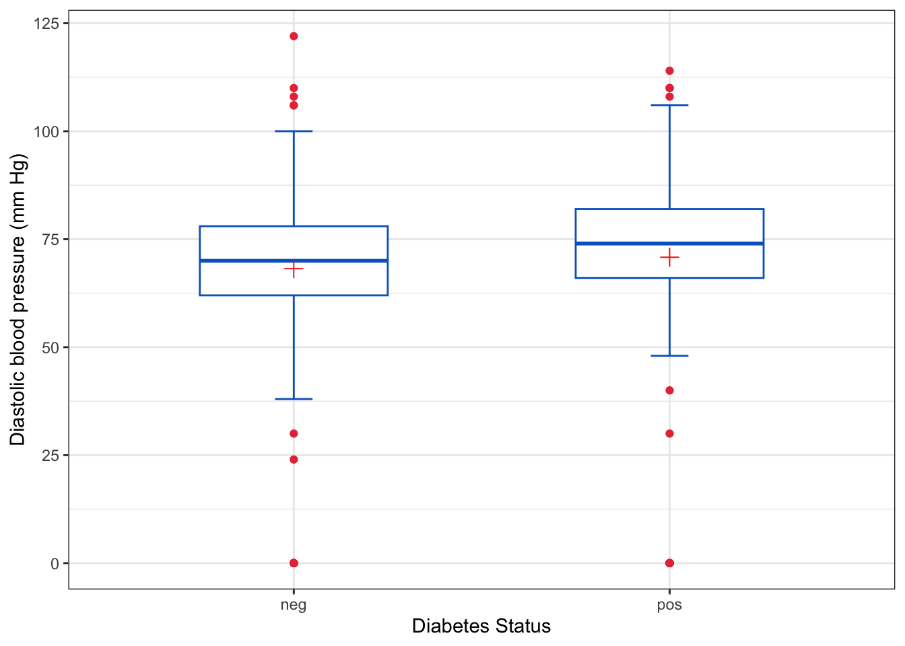
The Boxplot function from the car package labels the outliers with the corresponding observation numbers.
Observations \(61, 16, 33\) and \(34\) are considered as outliers.
The boxplot() function from base R and geom_boxplot() function from ggplot2 produce different boxplots because they are based on different algoriths for calculating quantiles.
The following figure shows a side by side comparison of the boxplots produced by the two functions for the mpg variable from the mtcars dataset:
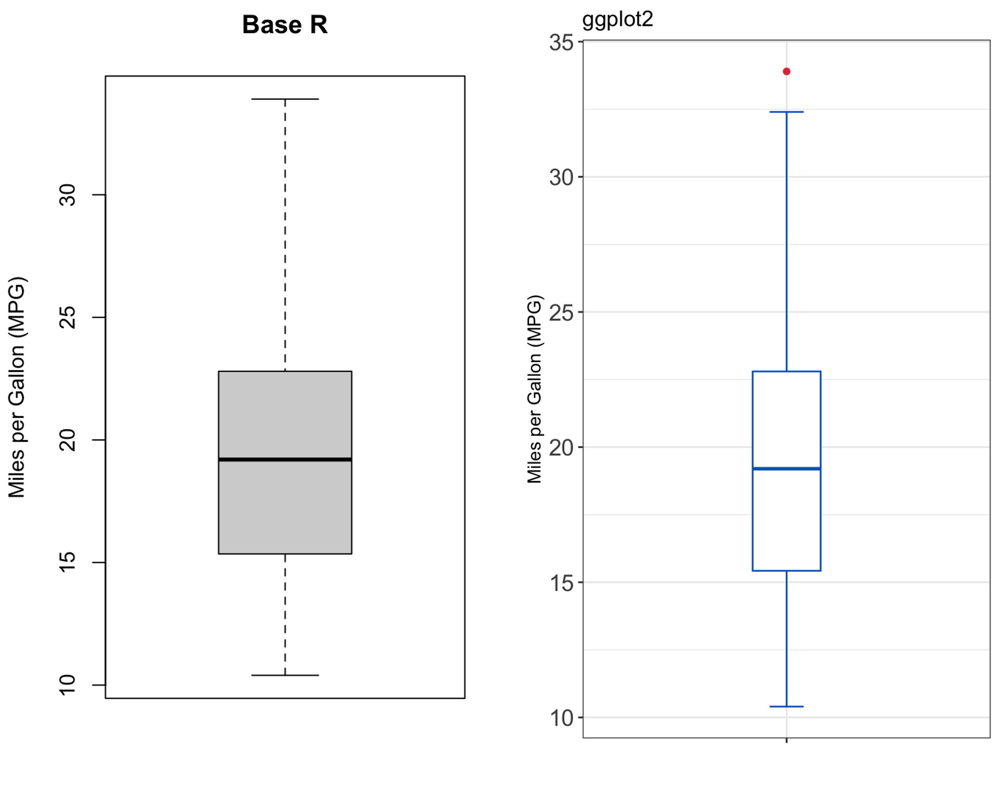
As depicted in the figure, the boxplot produced by ggplot2 identifies one outlier that is not identified by the base R boxplot().
To see the differences in calculations, we can extract the values used for constructing the boxplots using the boxplot.stats() function for base R and ggplot_build() function for ggplot2 as follows:
$stats
[1] 10.40 15.35 19.20 22.80 33.90
$n
[1] 32
$conf
[1] 17.11916 21.28084
$out
numeric(0) ymin lower middle upper ymax outliers notchupper notchlower x flipped_aes
1 10.4 15.425 19.2 22.8 32.4 33.9 21.25989 17.14011 0 FALSE
PANEL group ymin_final ymax_final xmin xmax xid newx new_width weight
1 1 -1 10.4 33.9 -0.375 0.375 1 0 0.75 1
colour fill alpha shape linetype linewidth
1 grey20 white NA 19 solid 0.5The output shows different \(Q_1\), \(Q_3\), and consequently different IQR, fences and outliers.
In addition, the notches are different because the of different \(IQR\).
Boxplots can provide information about the distribution of data.
For example, consider the following boxplots:
set.seed(123)
x <- rnorm(1000)
y <- rexp(1000)
par(mfrow=c(2, 2))
plot(density(x), main="Density Plot of X")
plot(density(y), main="Density Plot of Y")
boxplot(x, main="Boxplot of X", col = "white")
points(1, mean(x), col="red", pch=3)
boxplot(y, main="Boxplot of Y", col = "white")
points(1, mean(y), col="red", pch=3)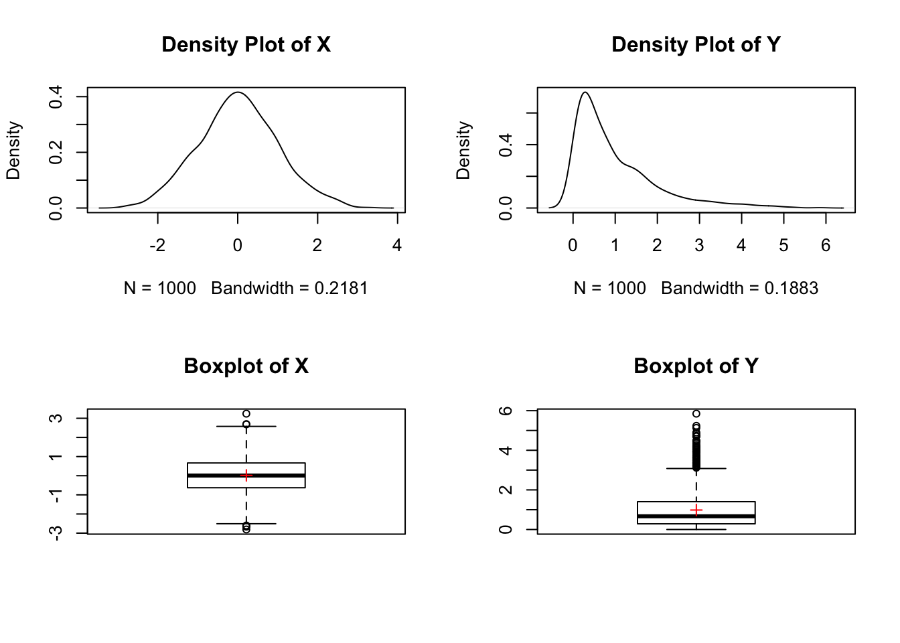
The boxplot of \(X\) is symmetric with the median at the center of the box, the whiskers are of equal length, and a few outliers on both sides of the whiskers. In addition, the mean and median appear to be identical.
On the other hand, the boxplot of \(Y\) is skewed to the right with the median closer to the \(Q_1\), the whisker on the right is longer than the whisker on the left with many outliers on the right side. The mean is greater than the median, which is due to the presence of outliers on the right side (right skewness).
Boxplots can be misleading because they cannot capture the shape of the distribution accurately. For example, the fail to capture multimoality or kurtosis (i.e., peakedness of the distribution).
Therefore, other variants of boxplots have been used by overlaying the original observations on the boxplot as jittered points or dot plots or wrapping the boxplot in a violin plot that shows the density of the data. These approaches provide more insights about the distribution of the data.
Jittering means slightly displacing (spreading) the points horizontally to avoid overlapping, while in the dot plot, the points are stacked on top of each other.
The following figure shows that boxplot lacks the ability to capture the bimodal nature of the data, which is evident from the density plot or the boxplot with jittered points:
# Load necessary libraries
set.seed(123)
# Generate Bimodal Data with clear separation
data_bimodal <- c(
rnorm(500, mean = 20, sd = 10),
rnorm(500, mean = 80, sd = 10)
)
par(mfrow=c(3,1))
boxplot(
data_bimodal,
main = "Boxplot of bimodal Data",
ylab = "Values",
horizontal = TRUE)
plot(
density(data_bimodal),
main = "Density Plot of bimodal Data"
)
boxplot(
data_bimodal,
main = "Boxplot of bimodal Data",
horizontal = TRUE,
col = "white"
)
stripchart(
data_bimodal,
method = "jitter",
pch = 19, # select the point type
add = TRUE, # add the points to the existing plot
col = "#0466c8",
vertical = FALSE,
jitter = 0.1 # control the amount of jittering
)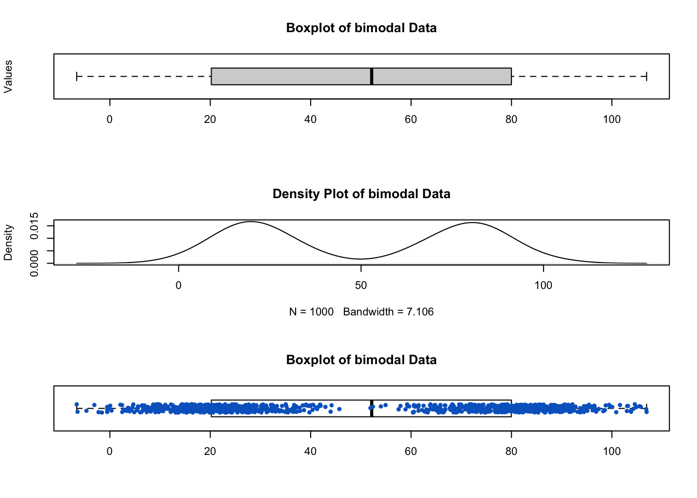
Using stripchart() function to produce jittered points.
boxplot(
Sepal.Width ~ Species,
data = iris,
col = "white",
outline = FALSE,
main = "Boxplot of sepal width grouped by \n species with jittered points",
xlab = "Species",
ylab = "Sepal Width"
)
stripchart(
Sepal.Width ~ Species,
data = iris,
method = "jitter", # select the jitter method
pch = 19, # select the point type
add = TRUE, # add the points to the existing plot
col = "#e63946",
vertical = TRUE,
jitter = 0.1, # control the amount of jittering
cex = 0.7 # control the size of the points
)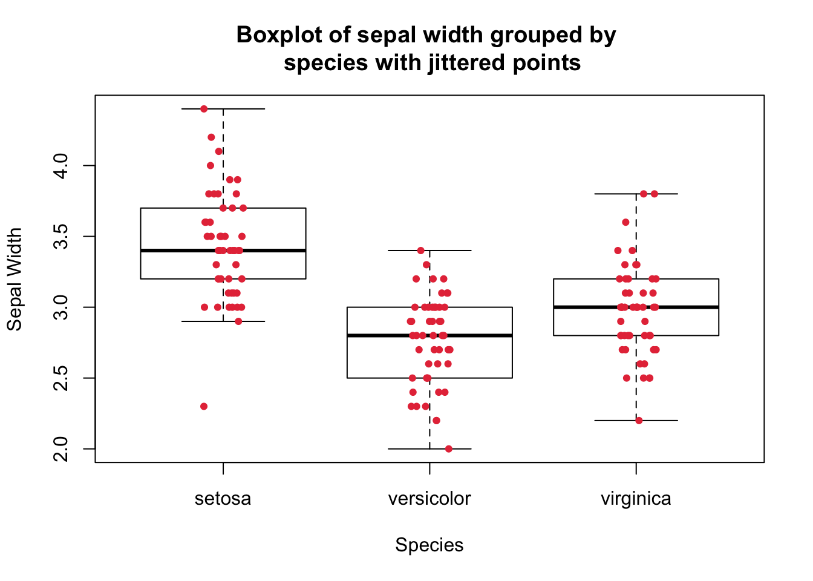
library(ggplot2)
ggplot(
data = iris,
aes(
x = Species,
y = Sepal.Width
)
) +
geom_boxplot(
width = 0.5,
color = "#0466c8",
outliers = FALSE,
staplewidth = 0.2
) +
geom_jitter(
width = 0.2,
color = "#e63946",
size = 0.7
) +
labs(
x = "Sepal Width",
y = "Species",
) +
labs(title = "Boxplot with jittered points") +
theme_bw()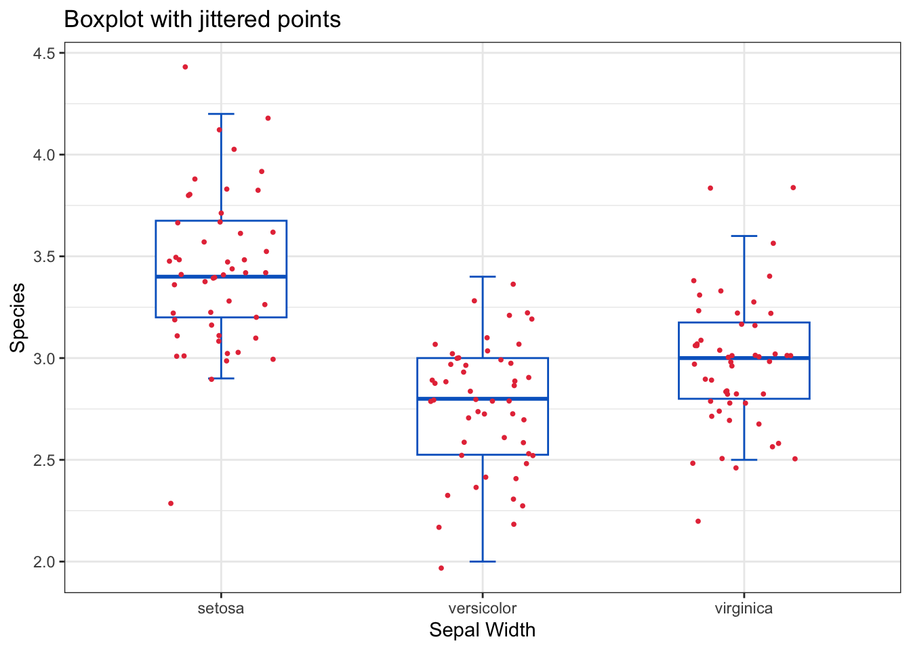
beeswarm function from the beeswarm package that provides various methods to separate coincident points such that the points are stacked and do not overlap.library(beeswarm)
boxplot(
Sepal.Width ~ Species,
data = iris,
col = "white",
outline = FALSE,
main = "Boxplot of sepal width grouped by \n species with jittered points",
xlab = "Species",
ylab = "Sepal Width"
)
beeswarm(
Sepal.Width ~ Species,
data = iris,
pch = 19, # select the point type
add = TRUE, # add the points to the existing plot
col = "#e63946",
method = "center", # select the jitter method
cex = 0.7 # control the size of the points
)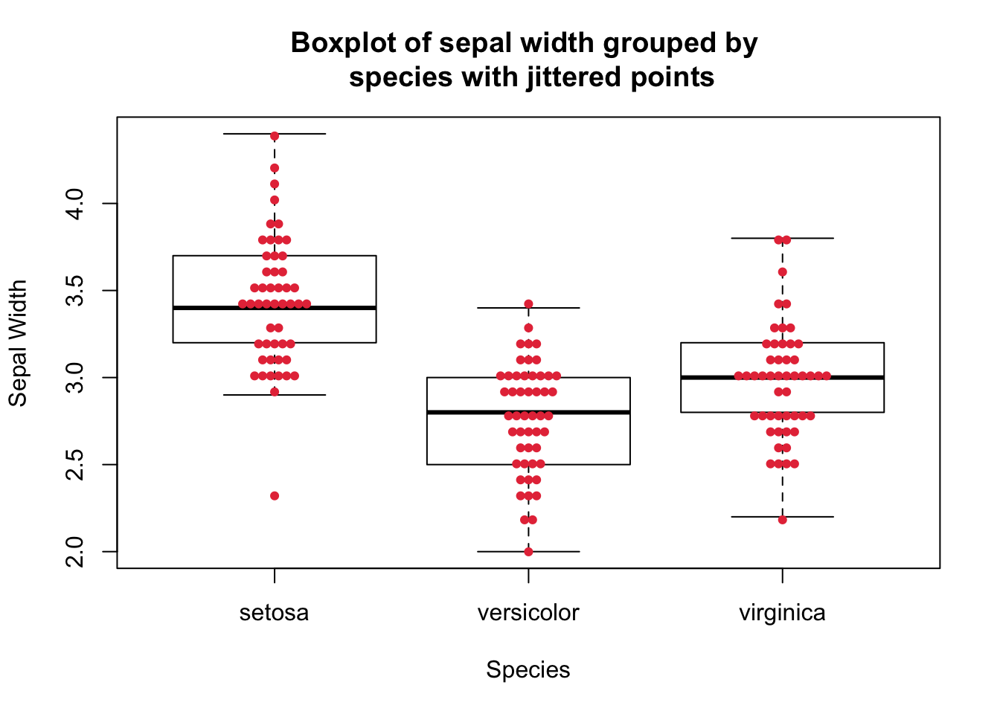
ggplot(
data = iris,
aes(
x = Species,
y = Sepal.Width
)
) +
geom_boxplot(
width = 0.5,
color = "#0466c8",
outliers = FALSE,
staplewidth = 0.2
) +
geom_dotplot(
binaxis = "y",
stackdir = "center",
dotsize = 0.4,
fill = "#e63946",
color = "#e63946",
) +
labs(
x = "Sepal Width",
y = "Species",
) +
labs(title = "Boxplot with dot plot") +
theme_bw()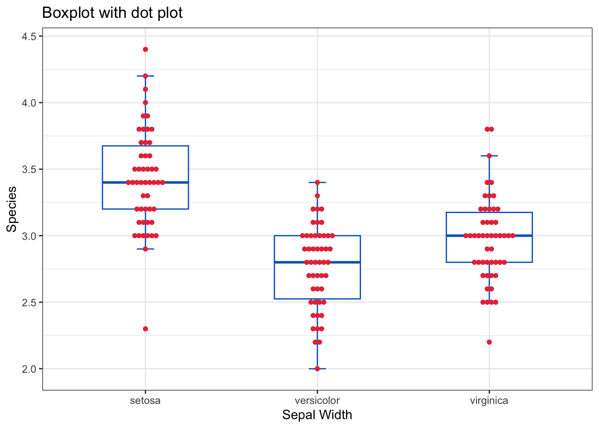
library(vioplot)
vioplot(
x = data_bimodal,
rectCol = "white", # color of the box
lineCol = "white", # color of the lines
colMed = "#e63946", # color of the median point
wex = 0.6, # relative expansion of the violin
col = rgb(212/255, 73/255, 76/255, alpha = 0.8),
names = "Bimodal distribution", # label for variable
main = "Violin plot of bimodal data"
)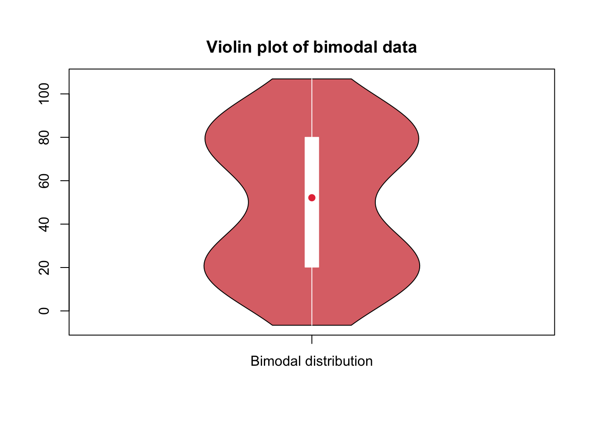
library(ggpubr)
my_data <- data.frame(
x = data_bimodal,
group = "Binomial Distribution"
)
ggviolin(
data = my_data,
x = "group",
y = "x",
fill = "#e63946",
alpha = 0.8,
width = 0.7,
xlab = "",
ylab = "Values",
main = "Violin plot of bimodal data",
add = "boxplot",
add.params = list(
alpha = 0.5,
fill = "white",
width = 0.04
),
ggtheme = theme_bw()
)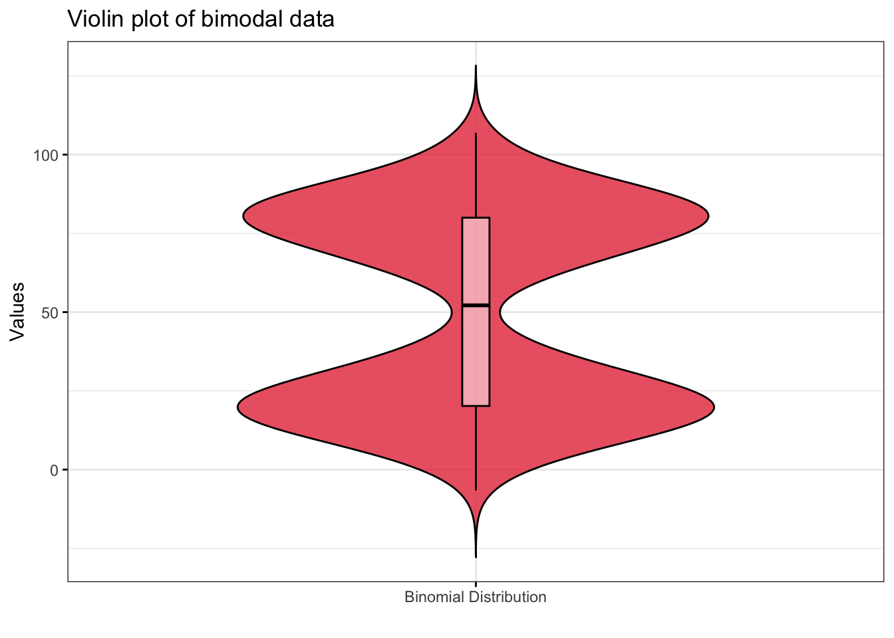
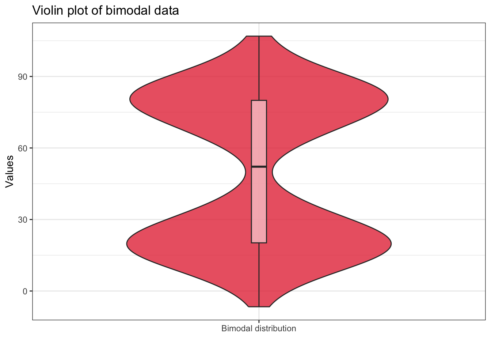
Daniel, W. W. and Cross, C. L. (2013). Biostatistics: A Foundation for Analysis in the Health Sciences, Tenth edition. Wiley
Heumann, C., Schomaker, M., and Shalabh (2022). Introduction to Statistics and Data Analysis: With Exercises, Solutions and Applications in R. Springer
Lane, D. M. et al., (2019). Introduction to Statistics. Online Edition. Retrieved September 14, 2024, from https://openstax.org/details/introduction-statistics